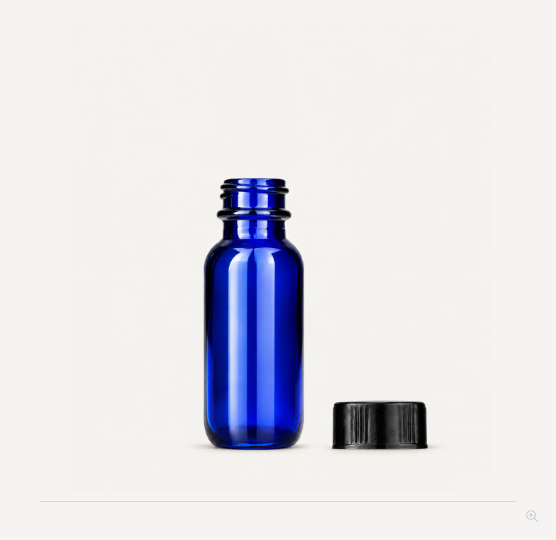
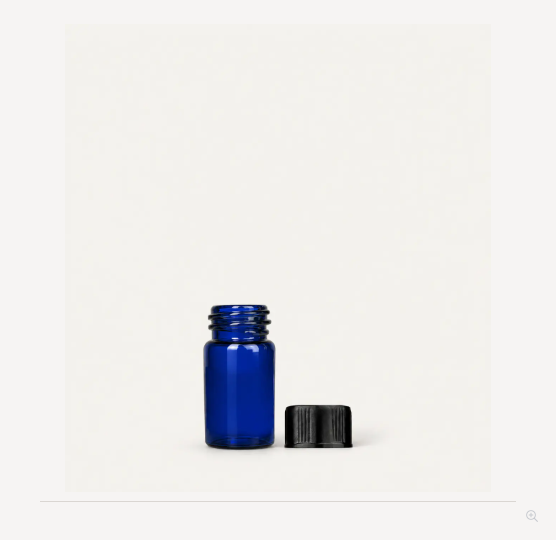

Catalog follow-up review
Local candidates and verification from October 31. Nothing here is published or approved for production. The original checkpoint is preserved in draft PR #382.
Short amber 13-425 vial
Complete 22 × 16 mm body, one white cap, full thumbnail. Native generated artwork guided by the exact legacy photograph and a dimensioned Blender candidate. Not a Sunburst output; that request failed because API credit was exhausted. Legacy description says 1.5 ml while capacity field says 2 ml; catalog naming remains unchanged.
Measured 2 ml 8-425
Clear and amber Sunburst edits. 35 × 11.64 mm display envelope; 8.96 mm thread crest reference; 40.24% full-glass frame height, 91% baseline. Four exact cap SKUs, 32 browser checks.
5 ml Cylinder roll-ons
Removed stale glass-neck overlays from 36 roller variants. Approved v19 clear/cobalt bodies retained. All 71 configurations match the builder; six product-to-builder handoffs passed.
Tulip 5 ml dip tube
Replaced broken cutout with a Blender tube: 1.1 mm outer diameter, 0.7 mm bore, 1.2 mm gentle tip bend. Eight sprayer finishes and 24 browser view checks. Housing and interior floor are visually inferred, not manufacturer measured.
Cobalt and blue audit: 117 SKUs, 24 product groups
Representative products reviewed across all groups. This does not approve every closure finish. The 15 ml Boston Round dropper cutouts and older 4 ml blue dropper body remain unresolved. Some older kits have no exploded view.
Per-SKU findings CSV · Full findings JSON
atomizer-5ml
1 SKUs · Open product
atomizer-10ml
1 SKUs · Open product
boston-round-30ml-cobalt-blue-20-400-rollon
11 SKUs · Open product
boston-round-60ml-cobalt-blue-20-400-rollon
12 SKUs · Open product
boston-round-15ml-cobalt-blue-18-400-dropper
6 SKUs · Open product
boston-round-30ml-cobalt-blue-20-400-dropper
5 SKUs · Open product
boston-round-60ml-cobalt-blue-20-400-dropper
5 SKUs · Open product
boston-round-15ml-cobalt-blue-18-400
1 SKUs · Open product

sidecar capon (actual: sidecar)
capon (actual: sidecar) exploded (actual: sidecar)
exploded (actual: sidecar)boston-round-30ml-cobalt-blue-20-400
1 SKUs · Open product
boston-round-60ml-cobalt-blue-20-400
1 SKUs · Open product
vial-4ml-blue-13-425
2 SKUs · Open product
vial-4ml-blue-13-425-dropper
1 SKUs · Open product
vial-3ml-blue-13-425
1 SKUs · Open product

sidecar capon (actual: sidecar)
capon (actual: sidecar) exploded (actual: sidecar)
exploded (actual: sidecar)cylinder-5ml-cobalt-blue-13-415
10 SKUs · Open product
cylinder-9ml-cobalt-blue-17-415-finemist
6 SKUs · Open product
cylinder-5ml-cobalt-blue-13-415-rollon
18 SKUs · Open product
cylinder-5ml-cobalt-blue-13-415-finemist
7 SKUs · Open product
cylinder-9ml-cobalt-blue-17-415-lotionpump
3 SKUs · Open product
cylinder-9ml-cobalt-blue-17-415-rollon
20 SKUs · Open product
teardrop-9ml-cobalt-blue-Ground-glassapplicator
1 SKUs · Open product
legacy gallery (actual: static) genie-32ml-cobalt-blue-Ground
1 SKUs · Open product
legacy gallery (actual: static) eternal-flame-35ml-cobalt-blue-Ground
1 SKUs · Open product
legacy gallery (actual: static) apothecary-15ml-cobalt-blue-Ground-glassapplicator
1 SKUs · Open product
legacy gallery (actual: static) apothecary-30ml-cobalt-blue-Ground-glassapplicator
1 SKUs · Open product
legacy gallery (actual: static)